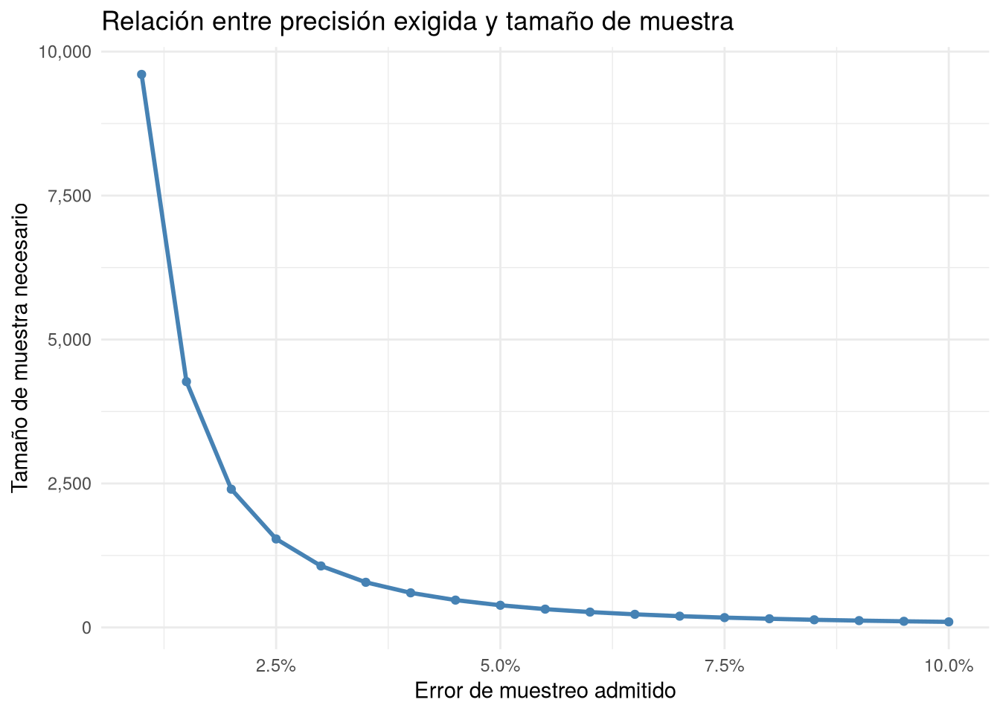
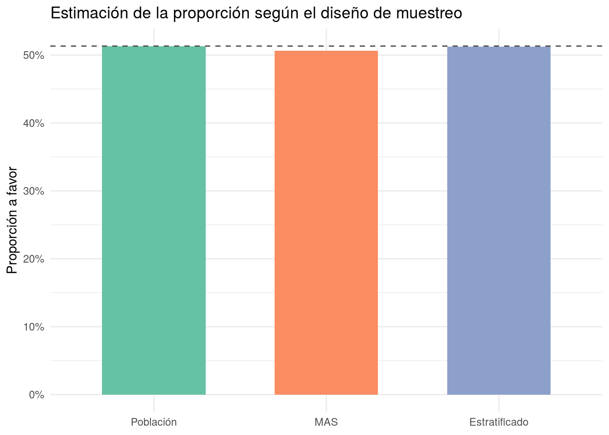

Código
calcular_n <- function(e, confianza = 0.95, p = 0.5) {
alpha <- 1 - confianza
z <- qnorm(1 - alpha / 2)
n <- (z^2 * p * (1 - p)) / e^2
ceiling(n)
}
n_necesario <- calcular_n(e = 0.03, confianza = 0.95, p = 0.5)
n_necesario[1] 1068Como se adelantó en el capítulo de introducción, la encuesta es probablemente el instrumento de recogida de datos más extendido en estadística aplicada: consiste en seleccionar una muestra de individuos de una población y medir sobre ellos, mediante un cuestionario u otro procedimiento de observación, una o varias variables de interés (opiniones, hábitos, características sociodemográficas, intención de voto, etc.). En la mayoría de los casos comparte con el estudio transversal la misma lógica temporal, ya que las variables se registran en un único momento, sobre una muestra tomada de la población general sin condicionar la selección a ninguna exposición o resultado previo. Sin embargo, mientras que en los capítulos anteriores el foco estaba en el tipo de diseño observacional o experimental, en este capítulo el foco se traslada a una cuestión transversal a todos ellos y crítica para la validez de cualquier estudio: cómo se selecciona la muestra a partir de la cual se pretende estimar o inferir características de toda la población.
Definición 9.1 (Encuesta estadística) Una encuesta estadística es un procedimiento de investigación que consiste en seleccionar una muestra de individuos de una población, mediante un método de muestreo determinado, y recoger información sobre ellos (habitualmente a través de un cuestionario) con el fin de estimar características, opiniones o comportamientos de la población de la que proceden.
La validez de las conclusiones de una encuesta depende, en gran medida, de que la muestra seleccionada sea representativa de la población objetivo. Esto exige, en primer lugar, disponer de un marco muestral adecuado.
Definición 9.2 (Marco muestral) El marco muestral (en inglés, sampling frame) es el listado, registro o procedimiento que permite identificar y acceder a todos los elementos de la población objetivo, de manera que cada uno de ellos pueda ser seleccionado para formar parte de la muestra.
Un marco muestral incompleto o desactualizado (por ejemplo, un censo de población antiguo, o un listado telefónico que excluye a quienes solo disponen de móvil) introduce un sesgo de cobertura, ya que ciertos segmentos de la población tienen probabilidad nula o muy baja de ser seleccionados, con independencia de lo riguroso que sea el método de muestreo empleado posteriormente.
Cuando se dispone de un marco muestral adecuado, existen varios diseños de muestreo probabilístico, en los que cada elemento de la población tiene una probabilidad conocida (y no nula) de ser seleccionado, lo que permite calcular la precisión de las estimaciones y generalizarlas a la población con garantías estadísticas. Los principales son los siguientes.
En el muestreo aleatorio simple cada elemento de la población tiene la misma probabilidad de ser seleccionado, y la selección de cada individuo es independiente de la de los demás. Es el diseño de referencia, el más sencillo de analizar, pero exige disponer de un marco muestral completo y puede resultar poco eficiente cuando la población es muy heterogénea o está muy dispersa geográficamente.
En el muestreo estratificado la población se divide previamente en subgrupos o estratos, internamente lo más homogéneos posible respecto a la variable de interés y heterogéneos entre sí (por ejemplo, comunidades autónomas, tramos de edad o tipo de centro educativo), y dentro de cada estrato se selecciona una muestra aleatoria simple de manera independiente. Cuando el tamaño de la muestra en cada estrato se reparte en proporción al peso de dicho estrato en la población, se habla de afijación proporcional. Al garantizar la presencia de todos los estratos en la proporción adecuada, este diseño suele producir estimaciones más precisas que el muestreo aleatorio simple, para un mismo tamaño de muestra, siempre que los estratos sean realmente homogéneos internamente.
En el muestreo por conglomerados (o por clusters) la población se divide en grupos naturales o preexistentes (conglomerados), como colegios, manzanas de una ciudad o centros de salud, y en lugar de seleccionar individuos se seleccionan aleatoriamente algunos conglomerados completos, incluyendo a todos sus miembros en la muestra (o, en su versión bietápica, seleccionando después una submuestra dentro de cada conglomerado elegido). Resulta especialmente útil cuando no existe un marco muestral de individuos pero sí de conglomerados, y reduce mucho el coste logístico al concentrar el trabajo de campo en unas pocas zonas. A cambio, suele perder precisión respecto al muestreo aleatorio simple, ya que los individuos de un mismo conglomerado tienden a parecerse entre sí.
En el muestreo sistemático se ordena el marco muestral (por ejemplo, un listado de \(N\) individuos), se calcula un intervalo de selección \(k = N/n\) (siendo \(n\) el tamaño de muestra deseado), se elige aleatoriamente un punto de partida entre \(1\) y \(k\), y a partir de él se selecciona cada \(k\)-ésimo elemento de la lista. Es fácil de aplicar y, cuando el listado no sigue ningún patrón periódico relacionado con la variable de interés, suele proporcionar resultados muy similares a los del muestreo aleatorio simple.
Además de estos diseños probabilísticos, existen métodos de muestreo no probabilístico, como el muestreo por conveniencia (se selecciona a los individuos más accesibles) o el muestreo en bola de nieve (los participantes reclutan a su vez a otros participantes). Estos métodos son más rápidos y baratos, pero al no conocerse la probabilidad de selección de cada individuo no permiten calcular la precisión de las estimaciones ni generalizar los resultados a la población con garantías estadísticas, por lo que su uso queda habitualmente restringido a estudios exploratorios o poblaciones muy difíciles de acceder.
Además de las medidas descriptivas habituales (proporciones, medias, etc.), calculadas ahora ponderando por el diseño muestral empleado, dos cantidades son especialmente características del diseño de encuestas: el error de muestreo de una estimación y el tamaño muestral necesario para lograr una precisión determinada.
Definición 9.3 (Error de muestreo) Dada una muestra aleatoria simple de tamaño \(n\) en la que se ha observado una proporción muestral \(\hat p\) de individuos que presentan una determinada característica, el error de muestreo (o margen de error) de \(\hat p\) para un nivel de confianza \(1-\alpha\) se define como
\[e = z_{\alpha/2}\sqrt{\frac{\hat p(1-\hat p)}{n}}\]
donde \(z_{\alpha/2}\) es el valor crítico de la distribución normal estándar que deja una probabilidad \(\alpha/2\) a su derecha.
El error de muestreo es siempre un número no negativo,
\[e \geq 0,\]
y disminuye a medida que aumenta el tamaño de muestra \(n\), concretamente en proporción a \(1/\sqrt{n}\): para reducir el error a la mitad es necesario cuadruplicar el tamaño de muestra.
En la práctica, la pregunta habitual no es “¿qué error tiene mi muestra?” sino la inversa: “¿qué tamaño de muestra necesito para que el error no supere un determinado valor?”. Despejando \(n\) de la fórmula del error de muestreo se obtiene la siguiente expresión.
Definición 9.4 (Tamaño muestral necesario) Para estimar una proporción poblacional \(p\) con un error de muestreo máximo \(e\) y un nivel de confianza \(1-\alpha\), el tamaño de muestra necesario, suponiendo muestreo aleatorio simple sobre una población de tamaño muy superior a la muestra, es
\[n = \frac{z_{\alpha/2}^2\, p(1-p)}{e^2}\]
donde \(p\) es un valor aproximado (de un estudio previo o piloto) de la proporción que se quiere estimar; si no se dispone de tal valor, se toma \(p=0.5\), ya que es el valor que maximiza \(p(1-p)\) y por tanto produce el tamaño de muestra más conservador (el mayor posible).
Cuando la población tiene un tamaño finito y conocido \(N\) que no es muy superior al tamaño de muestra calculado, puede aplicarse el factor de corrección para poblaciones finitas,
\[n_{ajustado} = \frac{n}{1+\dfrac{n-1}{N}},\]
que reduce ligeramente el tamaño de muestra necesario. En la práctica, cuando \(N\) es grande frente a \(n\) (por ejemplo, encuestas sobre la población de un país o una ciudad grande), esta corrección apenas tiene efecto y suele omitirse.
Ejemplo 9.1 Se quiere diseñar una encuesta para estimar la proporción de la población de una ciudad que está a favor de un determinado proyecto urbanístico, con un error de muestreo máximo de \(e=0.03\) (tres puntos porcentuales) y un nivel de confianza del \(95\%\) (\(\alpha=0.05\), por lo que \(z_{\alpha/2}=1.96\)). Al no disponer de información previa sobre la proporción real, se toma el valor más conservador, \(p=0.5\). El tamaño de muestra necesario es
\[n = \frac{z_{\alpha/2}^2\, p(1-p)}{e^2} = \frac{1.96^2 \times 0.5 \times 0.5}{0.03^2} = \frac{0.9604}{0.0009} \approx 1067.1.\]
Redondeando hacia arriba, se necesitaría una muestra de \(n=1068\) individuos para garantizar, con una confianza del \(95\%\), que la proporción estimada no se aleje de la verdadera proporción poblacional en más de tres puntos porcentuales.
En primer lugar se reproduce en R el cálculo manual del Ejemplo 9.1, obteniendo el valor crítico \(z_{\alpha/2}\) con qnorm() y aplicando directamente la fórmula del tamaño muestral:
calcular_n <- function(e, confianza = 0.95, p = 0.5) {
alpha <- 1 - confianza
z <- qnorm(1 - alpha / 2)
n <- (z^2 * p * (1 - p)) / e^2
ceiling(n)
}
n_necesario <- calcular_n(e = 0.03, confianza = 0.95, p = 0.5)
n_necesario[1] 1068El resultado, 1068 individuos, coincide con el obtenido a mano. A continuación se representa cómo varía el tamaño de muestra necesario en función del error de muestreo admitido, para un nivel de confianza del 95%:
errores <- tibble(
e = seq(0.01, 0.10, by = 0.005)
) |>
mutate(n = map_dbl(e, ~ calcular_n(.x, confianza = 0.95, p = 0.5)))
ggplot(errores, aes(x = e, y = n)) +
geom_line(color = "steelblue", linewidth = 1) +
geom_point(color = "steelblue") +
scale_x_continuous(labels = scales::percent_format()) +
scale_y_continuous(labels = scales::comma_format()) +
labs(
x = "Error de muestreo admitido",
y = "Tamaño de muestra necesario",
title = "Relación entre precisión exigida y tamaño de muestra"
) +
theme_minimal()
Como cabía esperar, el tamaño de muestra necesario crece muy rápidamente a medida que se exige un error de muestreo menor, debido a la relación cuadrática entre ambas cantidades.
Para comparar la precisión del muestreo aleatorio simple (MAS) frente al muestreo estratificado, se simula una “población” de \(N=4000\) personas repartidas en 4 regiones, con una opinión binaria (a favor / en contra de una medida) cuya prevalencia varía sustancialmente de una región a otra, de forma que la región constituye un buen criterio de estratificación:
set.seed(2026)
N <- 4000
poblacion <- tibble(
id = 1:N,
region = sample(
c("Norte", "Sur", "Este", "Oeste"),
size = N,
replace = TRUE,
prob = c(0.30, 0.25, 0.25, 0.20)
)
)
# La probabilidad de estar a favor depende fuertemente de la región
prob_favor <- c(Norte = 0.75, Sur = 0.30, Este = 0.55, Oeste = 0.40)
poblacion <- poblacion |>
mutate(
p_favor = prob_favor[region],
opinion = rbinom(N, size = 1, prob = p_favor),
opinion = factor(opinion, levels = c(0, 1), labels = c("En contra", "A favor"))
)
poblacion# A tibble: 4,000 × 4
id region p_favor opinion
<int> <chr> <dbl> <fct>
1 1 Sur 0.3 En contra
2 2 Sur 0.3 En contra
3 3 Norte 0.75 A favor
4 4 Norte 0.75 A favor
5 5 Sur 0.3 En contra
6 6 Norte 0.75 A favor
7 7 Este 0.55 A favor
8 8 Oeste 0.4 A favor
9 9 Norte 0.75 A favor
10 10 Sur 0.3 A favor
# ℹ 3,990 more rowsLa proporción real de personas a favor en el conjunto de la población (el parámetro que se desea estimar) es:
p_poblacional <- mean(poblacion$opinion == "A favor")
p_poblacional[1] 0.51325A partir de esta población se extrae, en primer lugar, una muestra aleatoria simple de \(n=1068\) individuos:
muestra_mas <- poblacion |>
slice_sample(n = n_necesario)
p_mas <- mean(muestra_mas$opinion == "A favor")
p_mas[1] 0.5065543A continuación se extrae una muestra estratificada por región, con afijación proporcional, del mismo tamaño total aproximado: se calcula la proporción que representa cada región en la población y se selecciona ese mismo porcentaje dentro de cada estrato:
prop_muestral <- n_necesario / N
muestra_estratificada <- poblacion |>
group_by(region) |>
slice_sample(prop = prop_muestral) |>
ungroup()
nrow(muestra_estratificada)[1] 1067p_estratificado <- mean(muestra_estratificada$opinion == "A favor")
p_estratificado[1] 0.5126523Se comprueba que la muestra estratificada respeta, aproximadamente, el peso de cada región en la población:
muestra_estratificada |>
count(region) |>
mutate(proporcion_muestra = n / sum(n))# A tibble: 4 × 3
region n proporcion_muestra
<chr> <int> <dbl>
1 Este 268 0.251
2 Norte 322 0.302
3 Oeste 205 0.192
4 Sur 272 0.255poblacion |>
count(region) |>
mutate(proporcion_poblacion = n / sum(n))# A tibble: 4 × 3
region n proporcion_poblacion
<chr> <int> <dbl>
1 Este 1004 0.251
2 Norte 1207 0.302
3 Oeste 769 0.192
4 Sur 1020 0.255Por último, se comparan gráficamente las tres proporciones: la real de la población y las estimadas por cada uno de los dos métodos de muestreo.
comparacion <- tibble(
metodo = c("Población", "MAS", "Estratificado"),
proporcion = c(p_poblacional, p_mas, p_estratificado)
) |>
mutate(metodo = factor(metodo, levels = c("Población", "MAS", "Estratificado")))
ggplot(comparacion, aes(x = metodo, y = proporcion, fill = metodo)) +
geom_col(width = 0.6) +
geom_hline(yintercept = p_poblacional, linetype = "dashed", color = "gray30") +
scale_y_continuous(labels = scales::percent_format()) +
scale_fill_brewer(palette = "Set2") +
labs(
x = NULL,
y = "Proporción a favor",
title = "Estimación de la proporción según el diseño de muestreo"
) +
theme_minimal() +
theme(legend.position = "none")
En esta simulación, la proporción real de personas a favor en la población es del 51.3%, mientras que la muestra aleatoria simple estima un 50.7% y la muestra estratificada un 51.3%. Dado que la región está fuertemente relacionada con la opinión (los estratos son internamente bastante homogéneos) y que la afijación proporcional garantiza que cada región esté representada en su peso exacto, cabe esperar que, en promedio y a lo largo de repeticiones del muestreo, la estimación estratificada se aproxime más a la proporción poblacional que la del muestreo aleatorio simple, cuya composición por regiones puede variar de una muestra a otra por puro azar. Este es precisamente el motivo por el que, siempre que se disponga de una variable de estratificación adecuada, el muestreo estratificado suele preferirse al muestreo aleatorio simple en las encuestas reales.
El diseño de muestreo no es un tipo de estudio alternativo a los descritos en los capítulos anteriores, sino una dimensión transversal a todos ellos: tanto un estudio descriptivo como un estudio transversal, un estudio de cohortes o un ensayo experimental necesitan seleccionar en algún momento una muestra de la población, y la calidad de ese muestreo condiciona directamente la validez de las conclusiones que se extraigan. Conviene prestar especial atención al diseño muestral, y en particular optar por el muestreo estratificado o por conglomerados frente al muestreo aleatorio simple, cuando la población es muy heterogénea, cuando existen variables conocidas fuertemente relacionadas con el fenómeno de interés, o cuando el coste de acceder a los individuos varía mucho según su localización o su pertenencia a un determinado grupo. Un cálculo previo del tamaño muestral necesario, en función de la precisión exigida y de los recursos disponibles, es también un paso imprescindible en la planificación de cualquier estudio, se trate de una encuesta de opinión, un estudio epidemiológico o un ensayo clínico. En definitiva, ningún análisis estadístico posterior, por sofisticado que sea, puede compensar una muestra mal seleccionada: la calidad del diseño muestral es, junto con el propio diseño del estudio, uno de los pilares sobre los que se sostiene la validez de cualquier investigación estadística.